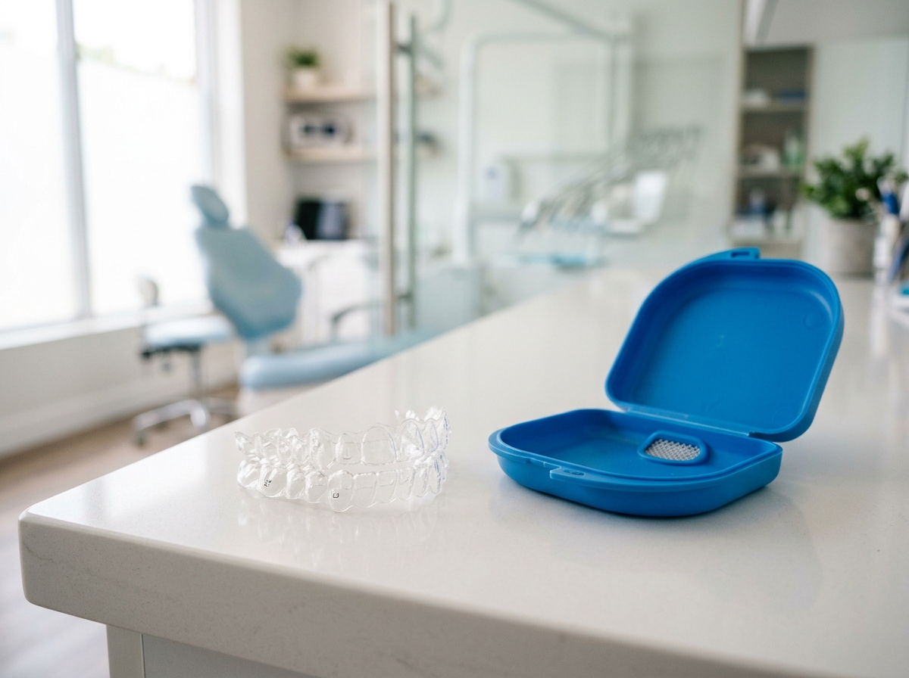

Ortodonzia
Un sorriso allineato è più sano e più facile da mantenere. Soluzioni per ogni età, dai ragazzi agli adulti, con la Dr.ssa Bonetto Cecilia.
Un sorriso allineato è più sano e più facile da mantenere. Soluzioni per ogni età, dai ragazzi agli adulti, con la Dr.ssa Bonetto Cecilia.

Perché l'ortodonzia
L'ortodonzia corregge malocclusioni, affollamenti e disallineamenti dentali. Un corretto allineamento non è solo una questione estetica: migliora la masticazione, facilita l'igiene orale quotidiana e può prevenire problematiche articolari e muscolari.
Il trattamento ortodontico è indicato sia nei pazienti in crescita – per guidare lo sviluppo delle arcate – sia negli adulti, grazie a soluzioni sempre più discrete ed efficaci. Al Centro Dentale Toti, la Dr.ssa Bonetto Cecilia è la specialista di riferimento per l'ortodonzia in bambini e adulti.
Le opzioni

Gli apparecchi con bracket e filo metallico rimangono la soluzione più versatile per le malocclusioni complesse. Permettono un controllo preciso dei movimenti dentali in ogni direzione.
Le mascherine trasparenti rappresentano un'alternativa esteticamente discreta. Sono removibili, facilitano l'igiene e sono particolarmente apprezzate dai pazienti adulti. Non tutti i casi sono trattabili con questa tecnica: durante la visita valuteremo l'opzione più adatta.
Domande frequenti
Una prima valutazione ortodontica è consigliata intorno ai 6-7 anni, quando è possibile intercettare problemi di sviluppo. Il trattamento con apparecchi fissi inizia solitamente con la dentatura permanente, intorno ai 12 anni. Per gli adulti non ci sono limiti di età.
La durata dipende dalla complessità del caso. I trattamenti più semplici possono completarsi in 6-12 mesi; quelli più complessi richiedono 18-24 mesi o più. La dottoressa fornirà una stima durante la visita.
Sì, per i casi per cui sono indicati. Sono efficaci su affollamenti lievi e moderati, chiusure di spazi e alcune malocclusioni. Casi complessi potrebbero richiedere l'apparecchio tradizionale. La scelta viene fatta insieme al paziente dopo una valutazione accurata.